Analyse des récits avec les trois niveaux de lecture
Nous allons explorer les trois niveaux de lecture qui permettent d'appréhender une œuvre de manière rigoureuse et complète.
Plus un récit est bon et bien écrit, plus il nous retient exclusivement au premier niveau de lecture, car ce niveau se suffit à lui-même. Lorsque l'univers fictif est vraisemblable, logique et immersif, le lecteur n'a aucune raison de sortir de ce cadre : les événements s'enchaînent naturellement, les personnages agissent en accord avec leurs motivations, et tout semble fluide et crédible.
C'est la lecture la plus épanouissante, car elle ne demande aucun effort supplémentaire : nous sommes pleinement plongés dans l'univers, oubliant presque qu'il s'agit d'une fiction.
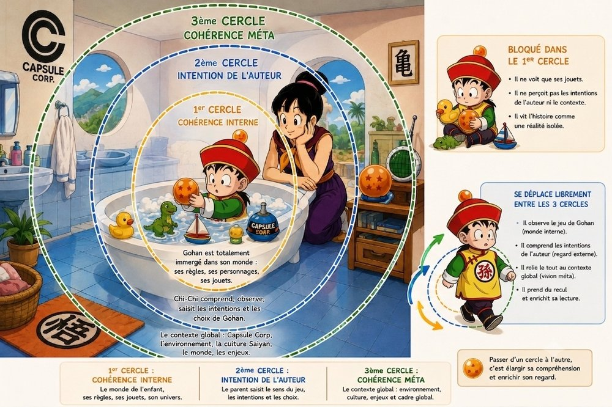
Les 3 cercles de lecture · Cohérence interne · Intention de l'auteur · Cohérence méta
1er niveau : La cohérence interne
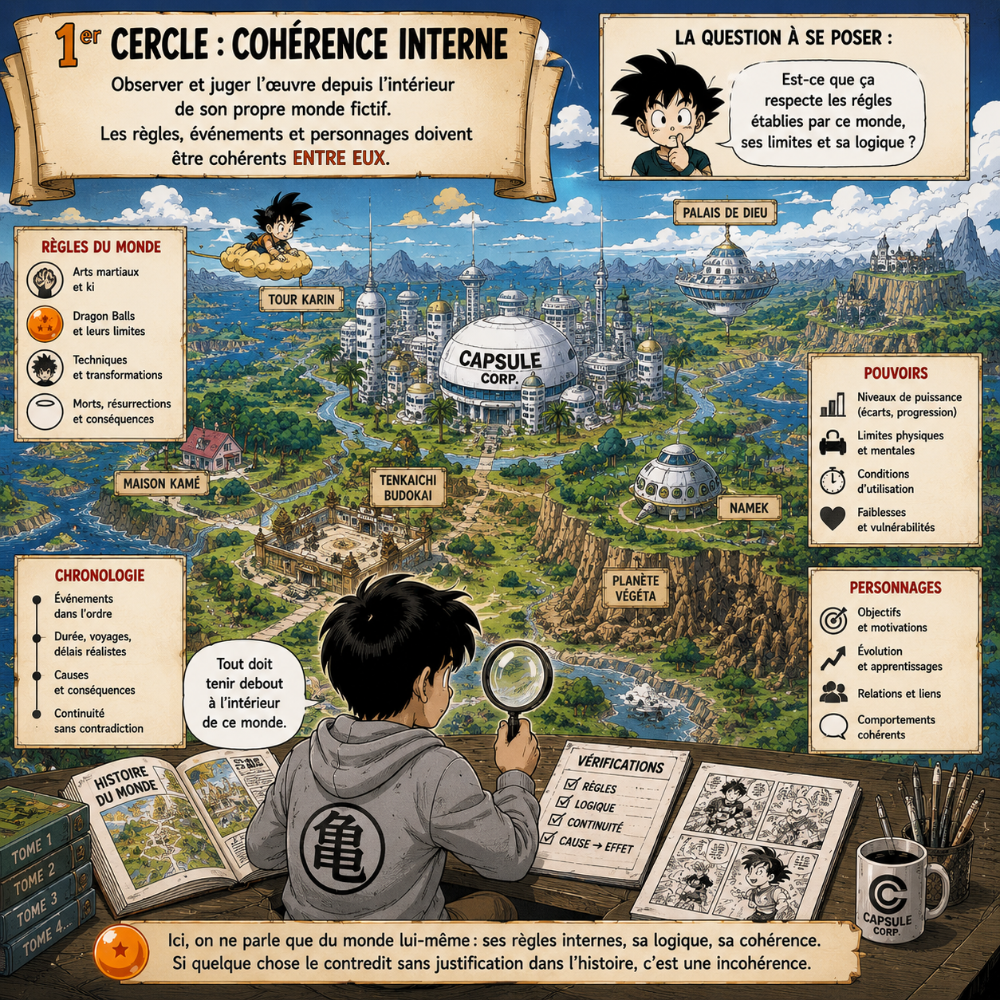
Le premier niveau de lecture est toujours celui avec lequel on commence. Il repose sur la logique interne de l'univers et des personnages. Le lecteur accepte de suspendre son incrédulité tant que l'histoire respecte ses propres règles.
Le cercle central représente le cœur du récit, l'univers fictif. Il repose sur trois piliers fondamentaux :
Les actions et décisions des protagonistes doivent être cohérentes avec leur caractère, leurs motivations et les événements qui les entourent.
L'univers doit fonctionner selon ses propres lois internes. Par exemple, l'utilisation des Dragon Balls suit des règles définies — on ne peut pas ressusciter une personne morte de vieillesse.
Le lecteur accepte volontairement des éléments fantastiques ou irréels tant que le récit reste logique et fidèle à lui-même.
2ème niveau : L'intention de l'auteur
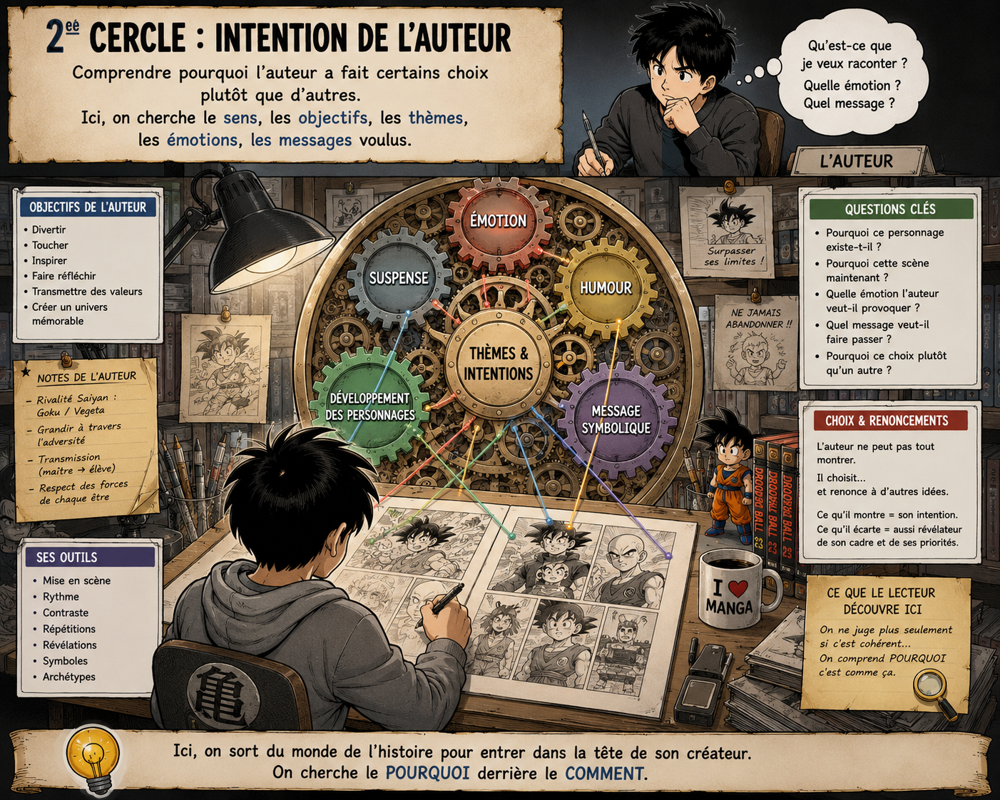
La deuxième lecture intervient lorsque la première montre des failles. Lorsque certains éléments deviennent incohérents — une décision de personnage qui semble artificielle, des événements forcés —, le lecteur est amené à chercher une explication en dehors de la logique interne du récit.
Ce passage signifie que le lecteur a temporairement quitté l'univers fictif pour se questionner sur les choix de l'auteur.
- Pourquoi ce personnage agit-il ainsi ? Est-ce pour servir un rebondissement ?
- Pourquoi cet événement semble-t-il précipité ? Est-ce un choix narratif destiné à accélérer l'intrigue ?
Comprendre pourquoi l'auteur fait certains choix narratifs — développement de personnages, changements dans l'intrigue, thèmes explorés.
Les connexions et trames, explicites ou implicites, qui lient des éléments de l'histoire entre eux.
Les outils utilisés pour raconter l'histoire : flashbacks, ellipses, répétitions thématiques.
Comment l'auteur enrichit le monde fictif à travers des ajouts progressifs.
Les émotions ou réflexions que l'auteur cherche à susciter.
3ème niveau : La cohérence méta
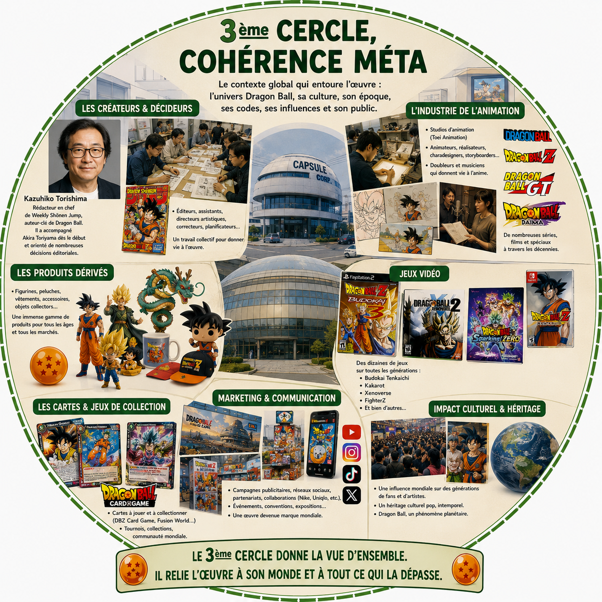
Le troisième niveau intervient lorsque les deux premiers échouent à justifier certaines invraisemblances. Il ne s'agit plus d'une démarche artistique ou narrative, mais d'une analyse mercantile et extra-narrative.
- Freezer et Broly deviennent « gentils » par pur fan service, sans véritable justification narrative.
- L'introduction de nouvelles transformations répond davantage à des attentes marketing qu'à une cohérence narrative.
Les conditions économiques, éditoriales ou sociétales ayant influencé l'œuvre.
L'impact de l'œuvre sur son époque et sa commercialisation.
Comment l'œuvre a été perçue par des publics variés à travers le temps.
Les théories, débats et significations développés par les fans ou les critiques.
Les liens avec d'autres œuvres, genres ou cultures.
Une progression naturelle, mais hiérarchisée
Un récit de qualité nous maintient dans ce cadre, car il fonctionne parfaitement par lui-même.
Il comble les lacunes lorsque des incohérences émergent, mais reflète généralement un défaut dans la construction narrative.
Il appartient à une logique commerciale ou contextuelle, souvent imposée de l'extérieur.
Nous allons maintenant explorer chaque niveau à travers des exemples et des analyses détaillées.
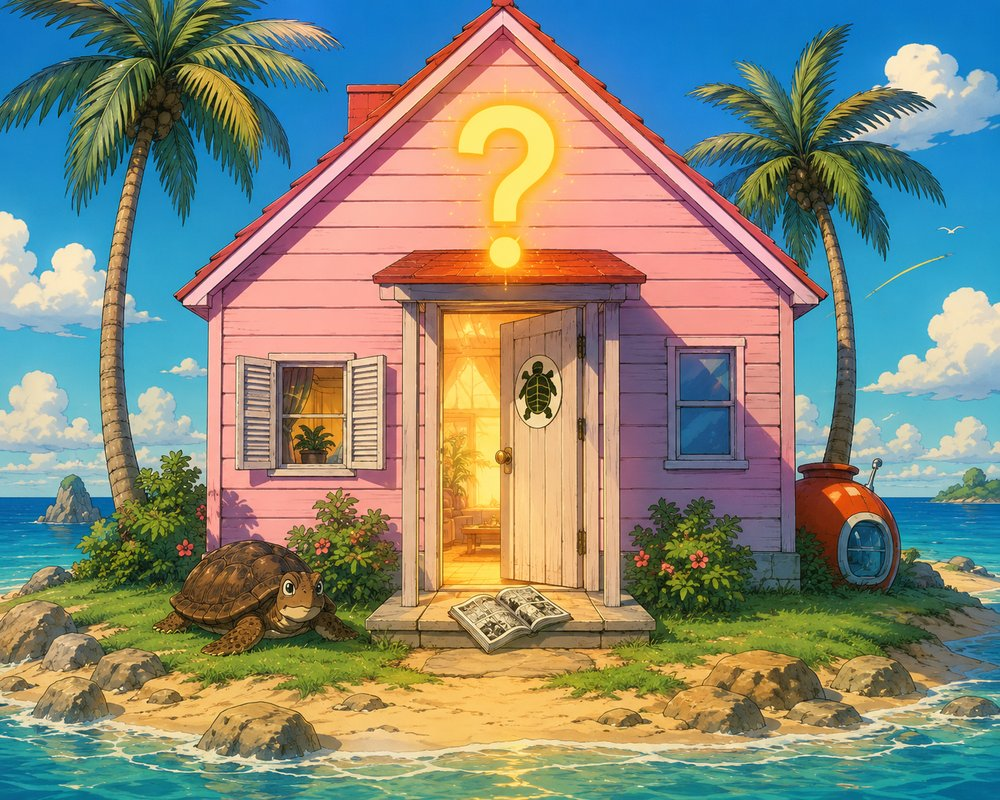
Exemples appliqués : lire une scène avec les trois niveaux
Voici plusieurs exemples de scènes où l'on doit appliquer différents niveaux de lecture afin de comprendre leur vrai sens narratif.
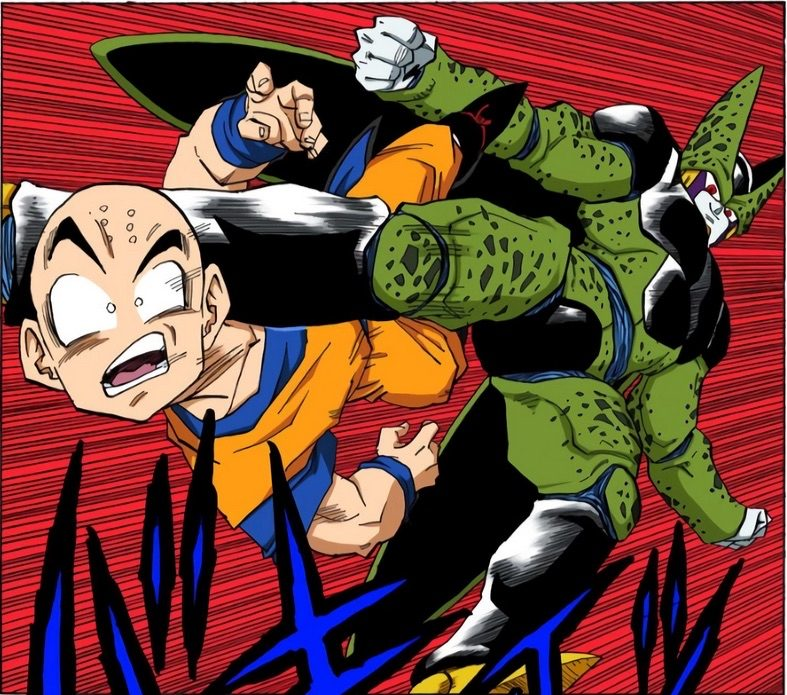
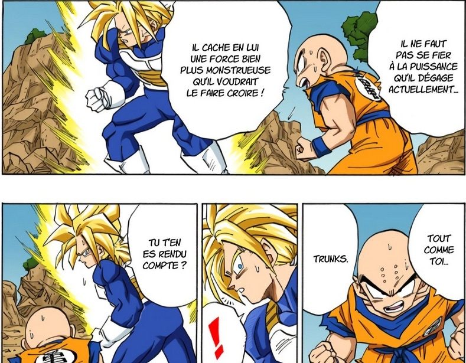
Si on reste dans la logique interne du récit, on pourrait supposer que Krillin a une capacité de power sense supérieure à d'autres personnages.
Cependant, en relisant les tomes précédents, rien ne confirme que Krillin possède une aptitude exceptionnelle dans ce domaine. Cette interprétation interne devient donc bancale.
Le lecteur commence à percevoir une incohérence : pourquoi Krillin, et pas Trunks qui est pourtant bien plus fort ?
En appliquant le second cercle, cette scène devient compréhensible. Toriyama attribue ce rôle à Krillin pour lui donner une utilité narrative.
Étant incapable de participer efficacement au combat, Krillin devient le « faire-valoir » et sert de voix du narrateur. Il verbalise ce que le lecteur doit comprendre : Cell cache une puissance immense et dangereuse.
Ici, le troisième cercle est inutile. Le deuxième suffit à expliquer cette scène.
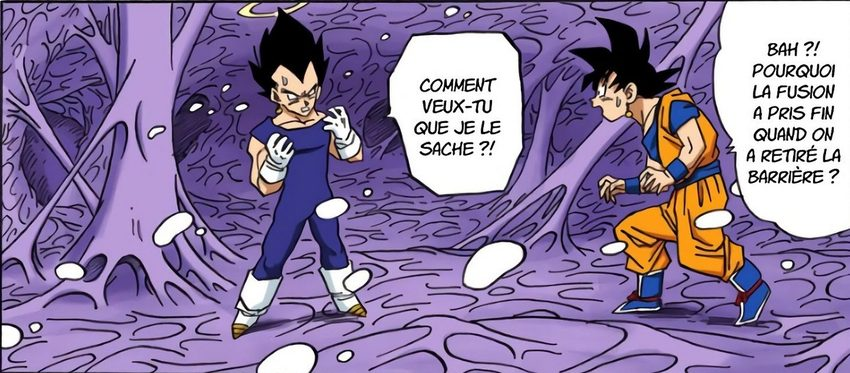
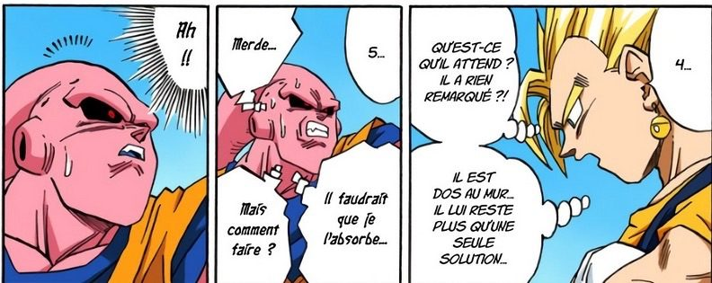
Vegetto explique qu'il ne veut pas tuer Buuhan immédiatement pour récupérer les personnages absorbés. Mais ce plan est incohérent : il pourrait tuer Buuhan, se téléporter sur Namek et utiliser les Dragon Balls pour tout résoudre.
La barrière protectrice qu'il utilise est un pari risqué — il ne l'a jamais utilisée et n'a aucune certitude qu'elle fonctionnera.
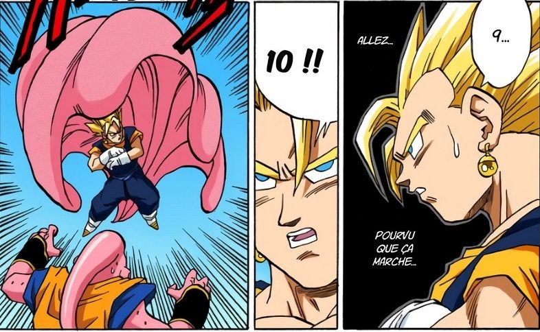
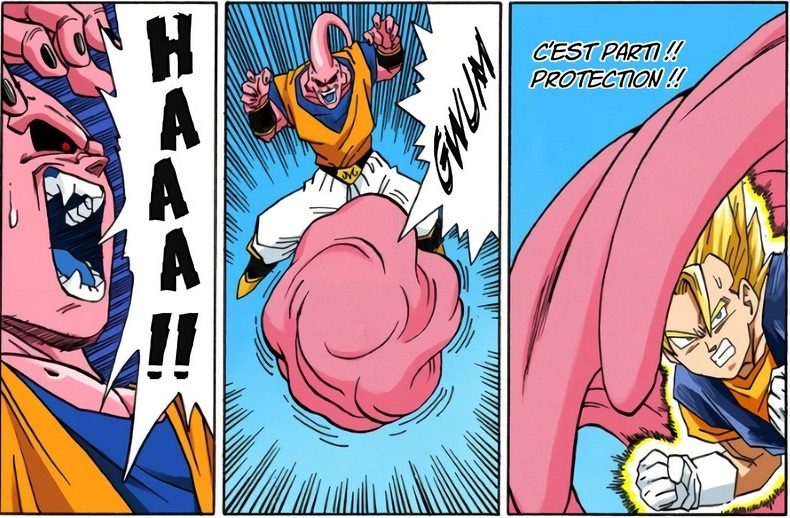

Intention principale : Toriyama veut se débarrasser de Vegetto, trop puissant pour maintenir le suspense. Garder Vegetto actif annulerait la tension de l'arc.
Construction narrative : L'auteur revient à des personnages moins invincibles — Goku et Vegeta — pour ramener de l'équilibre dramatique.
Effet : La confrontation finale avec Majin Buu sous sa forme pure devient plus emblématique.
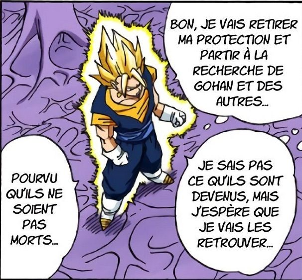
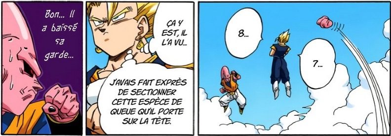
Ce niveau peut éclairer la décision sous un angle commercial, mais le 2ème cercle suffit.
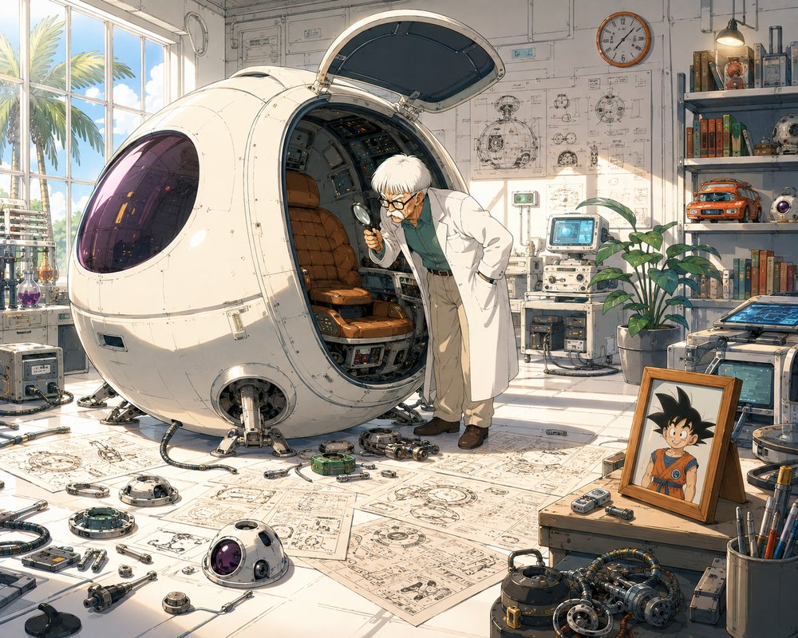
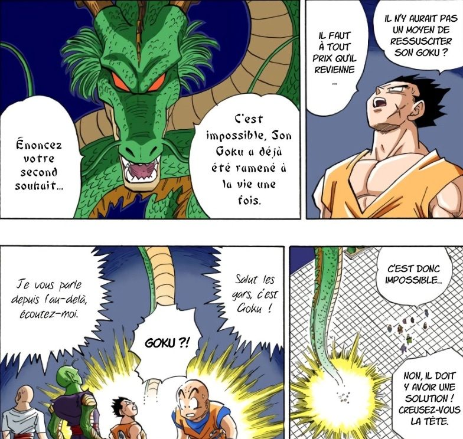
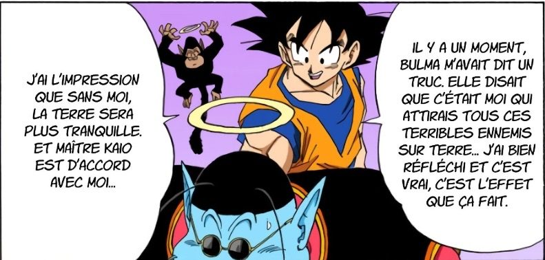
Le dialogue où Bulma affirme que Goku attire les ennemis sur Terre est pertinent à la relecture : Vegeta, Freezer, les cyborgs ont tous un lien avec Goku. De plus, Gohan est désormais plus fort que son père et peut assumer la protection de la Terre. La logique interne tient.
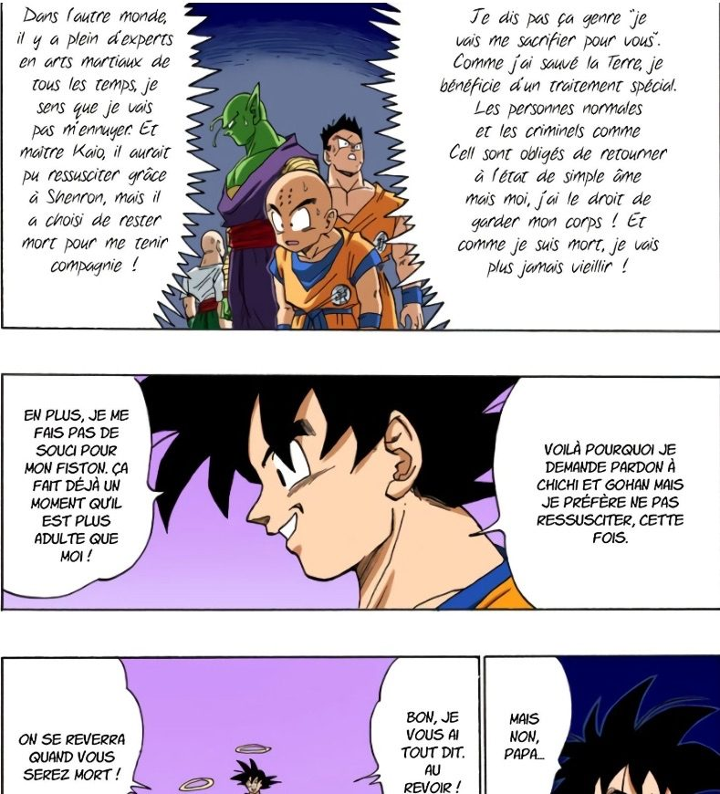
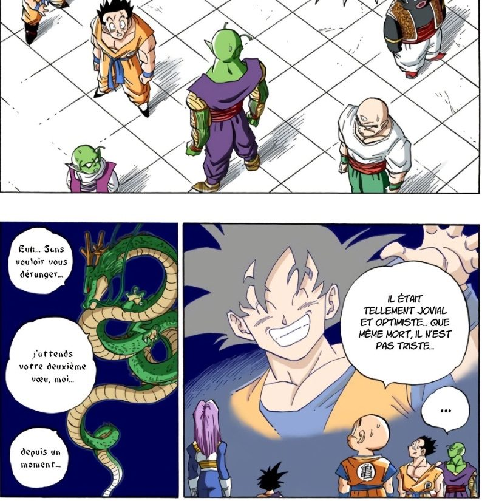
L'intention de Toriyama de passer le flambeau à Gohan est évidente — il avait préparé le terrain depuis l'introduction du personnage. La décision de Goku renforce ce développement tout en justifiant sa retraite narrative.

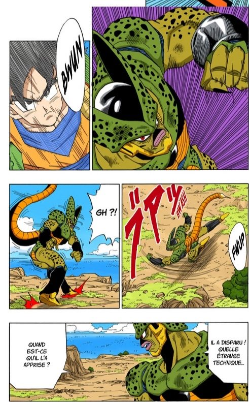
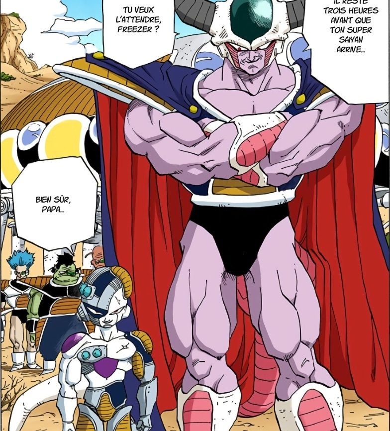
Freezer a subi des blessures fatales à plusieurs reprises — décapité, traversé par un disque, écrasé par une explosion planétaire. La justification que son corps fut réparé par la technologie semble insuffisante pour expliquer sa survie et son retour plus fort.
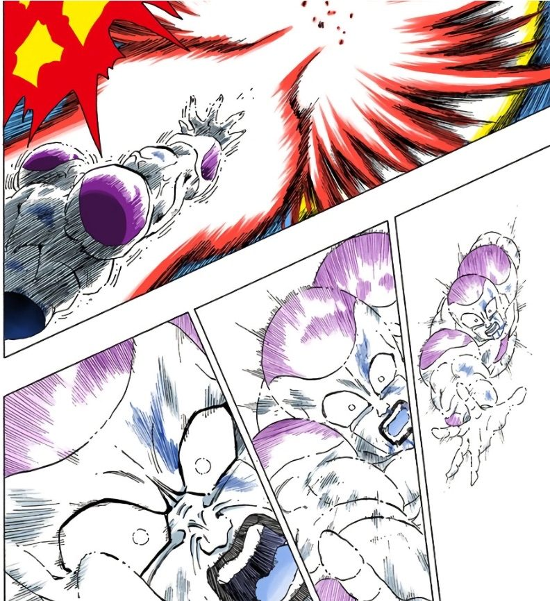
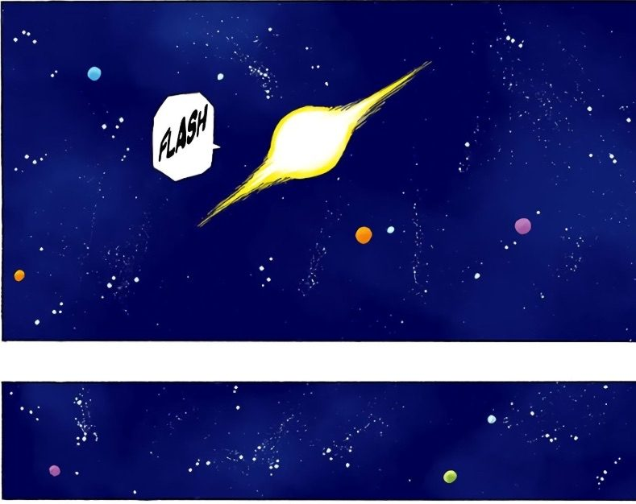
L'auteur utilise Freezer comme outil narratif :
- Faire de l'ancien ennemi ultime un faire-valoir pour Trunks et établir sa supériorité instantanément.
- Signaler l'escalade : si Freezer est balayé sans effort, la nouvelle menace sera encore plus redoutable.
- Marquer le changement de dynamique — Freezer devient accessoire dans les enjeux actuels.
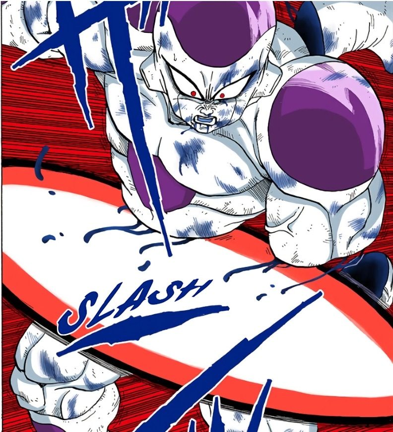
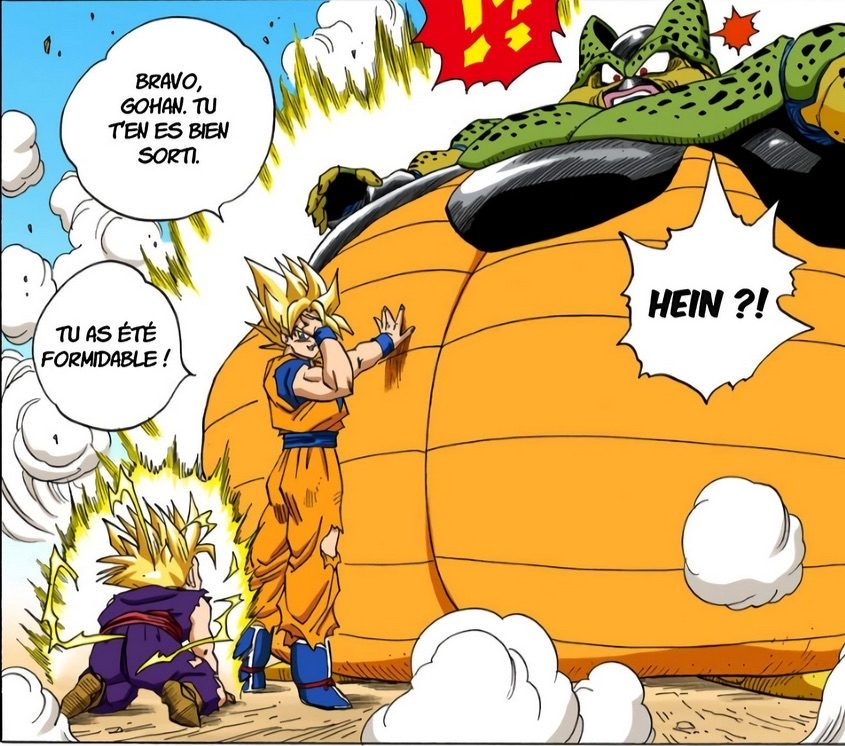